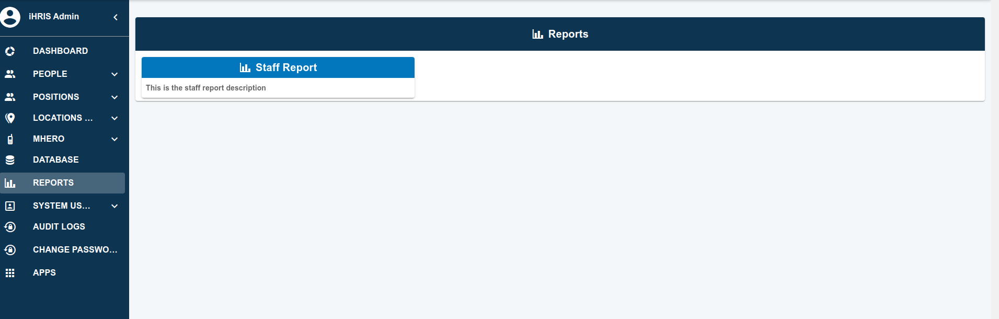
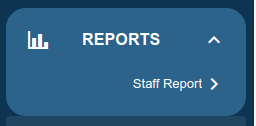
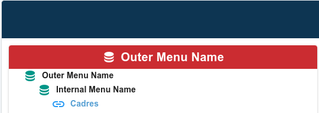

Creating and Customizing Menus.
iHRIS utilizes a hierarchical menu structure, shaping both the visual aesthetics and functional hierarchy of menus for a seamless user experience. We manage all these experiences from the parameters file.
Creating Menus
To create a nested menu, you need to add/edit a parameter with some properties.
To manage this there are some properties needed to be set:
* parameter[=].part[+].name = "site:nav:menu:reports:text"
* parameter[=].part[=].valueString = "Reports"
* parameter[=].part[+].name = "site:nav:menu:reports:menuGridView"
* parameter[=].part[=].valueString = "true"
* parameter[=].part[+].name = "site:nav:menu:reports:order"
* parameter[=].part[=].valueString = "9"
* parameter[=].part[+].name = "site:nav:menu:reports:icon"
* parameter[=].part[=].valueString = "mdi-chart-bar"
* parameter[=].part[+].name = "site:nav:menu:reports:menu:staff:text"
* parameter[=].part[=].valueString = "Staff Report"
* parameter[=].part[+].name = "site:nav:menu:reports:menu:staff:url"
* parameter[=].part[=].valueString = "/report/ihris-es-report-staff"
* parameter[=].part[+].name = "site:nav:menu:reports:menu:staff:order"
* parameter[=].part[=].valueString = "1"
* parameter[=].part[+].name = "site:nav:menu:reports:menu:staff:description"
* parameter[=].part[=].valueString = "This is the staff report description"
The above code will create a report menu with the name "Reports" and a submenu with the name "Staff Report" and a description "This is the staff report description".
| Properties | Description |
|---|---|
site:nav:menu:reports:text |
The name of the menu to be displayed on the navigation. |
site:nav:menu:reports:menuGridView |
is a boolean value that determines whether the menu will be displayed in the grid or not. |
site:nav:menu:reports:order |
is the order in which the menu will be displayed. |
site:nav:menu:reports:icon |
is the icon to be displayed on the menu. |
site:nav:menu:reports:menu:staff:text |
is the name of the submenu to be displayed on the navigation. |
site:nav:menu:reports:menu:staff:url |
is the url of the submenu to be displayed on the navigation. |
site:nav:menu:reports:menu:staff:order |
is the order in which the submenu will be displayed. |
site:nav:menu:reports:menu:staff:description |
is the description of the submenu to be displayed on the navigation if it is displayed in a grid view mode. |
The menuGridView property is optional and if not set or the value is false, the menu will be displayed in a list view mode.
| Grid View Mode | List View Mode |
|---|---|
|  |  |
Creating Nested
To create a nested menu, you need to add/edit a parameter with some properties. But if you created a nested menu the display mode will be in a grid view mode by default.
lets take a look at the example below:
* parameter[=].part[+].name = "site:nav:menu:database:text"
* parameter[=].part[=].valueString = "Database"
* parameter[=].part[+].name = "site:nav:menu:database:order"
* parameter[=].part[=].valueString = "8"
* parameter[=].part[+].name = "site:nav:menu:database:icon"
* parameter[=].part[=].valueString = "mdi-database"
The above code will create a database menu with the name "Database".
To add sub menu undet the database menu, you need to add the following properties:
* parameter[=].part[+].name = "site:nav:menu:database:menu:outerMenu:text"
* parameter[=].part[=].valueString = "Outer Menu Name"
* parameter[=].part[+].name = "site:nav:menu:database:menu:outerMenu:color"
* parameter[=].part[=].valueString = "#CB2C31"
* parameter[=].part[+].name = "site:nav:menu:database:menu:outerMenu:order"
* parameter[=].part[=].valueString = "1"
* parameter[=].part[+].name = "site:nav:menu:database:menu:outerMenu:icon"
* parameter[=].part[=].valueString = "mdi-database"
* parameter[=].part[+].name = "site:nav:menu:database:menu:outerMenu:menu:internalMenu:text"
* parameter[=].part[=].valueString = "Internal Menu Name"
* parameter[=].part[+].name = "site:nav:menu:database:menu:outerMenu:menu:internalMenu:icon"
* parameter[=].part[=].valueString = "mdi-database"
* parameter[=].part[+].name = "site:nav:menu:database:menu:outerMenu:menu:internalMenu:order"
* parameter[=].part[=].valueString = "6"
* parameter[=].part[+].name = "site:nav:menu:database:menu:outerMenu:menu:internalMenu:menu:cadre:text"
* parameter[=].part[=].valueString = "Cadres"
* parameter[=].part[+].name = "site:nav:menu:database:menu:outerMenu:menu:internalMenu:menu:cadre:url"
* parameter[=].part[=].valueString = "/resource/search/cadre"
* parameter[=].part[+].name = "site:nav:menu:database:menu:outerMenu:menu:internalMenu:menu:cadre:order"
* parameter[=].part[=].valueString = "1"
* parameter[=].part[+].name="site:nav:menu:database:menu:outerMenu:menu:internalMenu:menu:cadre:description"
* parameter[=].part[=].valueString = "this is description for cadre"
In the above code we created two nested menus, the first one is the outer menu and the second one is the internal menu. and we created cadre menu under the internal menu. the structure will be like this:

| Properties | Description |
|---|---|
site:nav:menu:database:menu:outerMenu:text |
The name of the outer menu to be displayed under database. |
site:nav:menu:database:menu:outerMenu:color |
is the color of the outer menu. if it is not specified it will take the primary collor |
site:nav:menu:database:menu:outerMenu:icon |
is the icon to be displayed on the outer menu. |
site:nav:menu:database:menu:outerMenu:menu:internalMenu:text |
is the name of the internal menu to be displayed under database -> outerMenu. |
site:nav:menu:database:menu:outerMenu:menu:internalMenu:icon |
is the icon to be displayed on the internal menu. |
site:nav:menu:database:menu:outerMenu:menu:internalMenu:menu:cadre:text |
is the name of the menu to be displayed under database -> outerMenu -> internalMenu. |
site:nav:menu:database:menu:outerMenu:menu:internalMenu:menu:cadre:url |
is the url of the menu to be displayed under database -> outerMenu -> internalMenu. |
if we want to add additional menu under the internal menu, we repeat the same process as above.
* parameter[=].part[+].name = "site:nav:menu:database:menu:outerMenu:menu:internalMenu:menu:classification:text"
* parameter[=].part[=].valueString = "Classifications"
* parameter[=].part[+].name = "site:nav:menu:database:menu:outerMenu:menu:internalMenu:menu:classification:url"
* parameter[=].part[=].valueString = "/resource/search/classification"
* parameter[=].part[+].name = "site:nav:menu:database:menu:outerMenu:menu:internalMenu:menu:classification:order"
* parameter[=].part[=].valueString = "2"
The structure will be like this:

The other scenario is when we want to add a menu under the outer menu, eg. if we want to add job title under the outer menu.
* parameter[=].part[+].name = "site:nav:menu:database:menu:outerMenu:menu:job:text"
* parameter[=].part[=].valueString = "Job Titles"
* parameter[=].part[+].name = "site:nav:menu:database:menu:outerMenu:menu:job:url"
* parameter[=].part[=].valueString = "/resource/search/job"
* parameter[=].part[+].name = "site:nav:menu:database:menu:outerMenu:menu:job:order"
* parameter[=].part[=].valueString = "4"
The Structure will be like this:

The Job title will be added under the outer menu. we can repast the above process to create the needed structure. if we lest others with out customization the will display in a card separately.